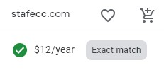

Website Planning Document
Site Name
Santa Fe Chamber of CommerceDomain
Logo
Purpose
Integrate the private space with the municipal and community area by presenting the organization's projects through the site. Inform commercial members of the proposals to improve development, growth, and security. It also provides information to invite new participants and establish a more robust business network in the city.